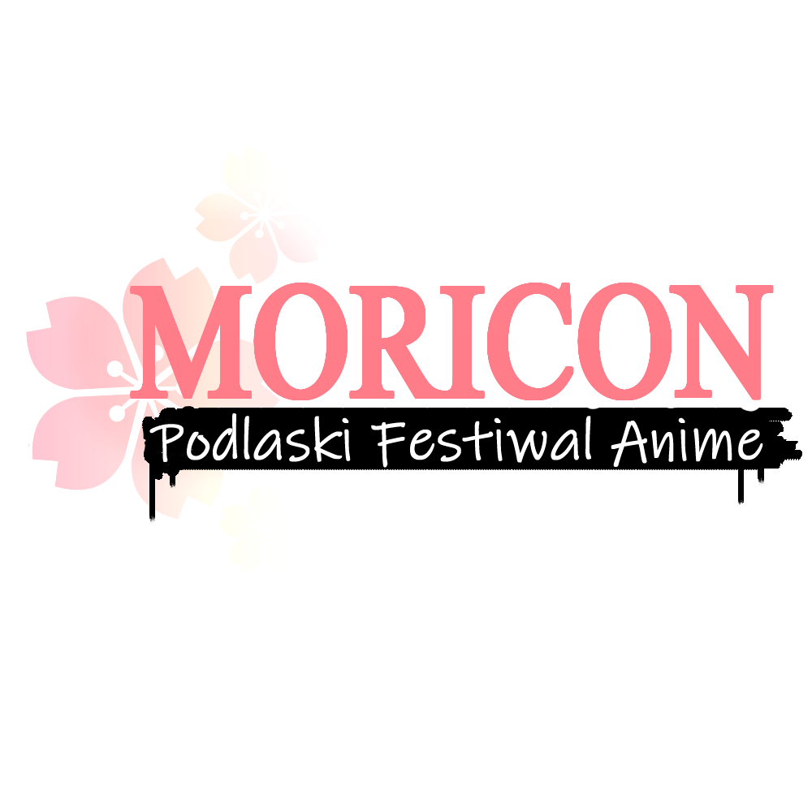
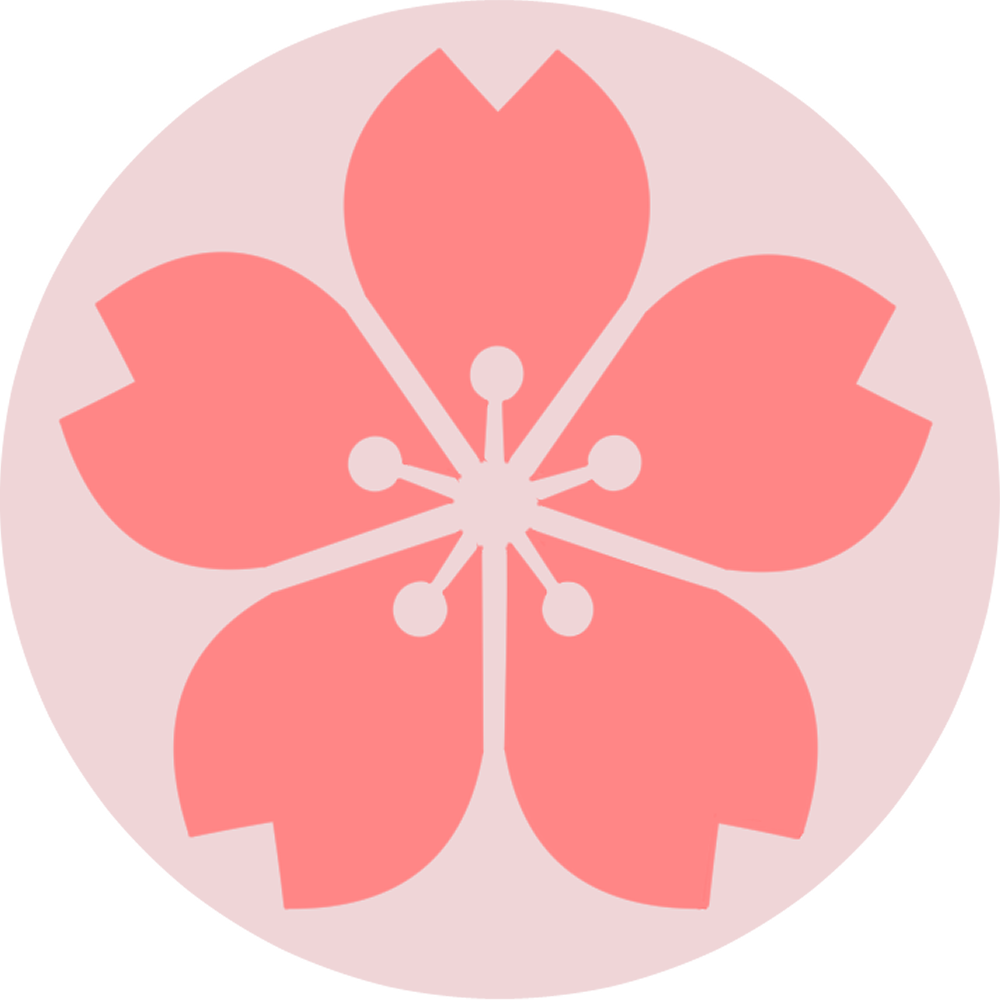

Podlaski Festiwal Anime Powraca!
Po dwuletniej przerwie, z nową nazwą "MORICON"!
Czym jest Moricon?
Festiwal Moricon to dziewiąta edycja Podlaskiego Festiwalu Anime - imprezy kierowanej do wszystkich fanów szeroko pojętej popkultury. Jest to najstarsza i największa tego typu impreza na Podlasiu, co rok zrzeszająca setki osób w różnym wieku, a z roku na rok przybywa nam uczestników spoza województwa podlaskiego.
Dziękujemy wszystkim za udział!
Mamy nadzieję zobaczyć się ponownie w 2023!
Program
Zostanie ogłoszony w 2023!
ZGŁOSZENIA
Zostaną ogłoszone w 2023!
Nie znalazłeś odpowiedzi na swoje pytanie?
Skontaktuj się z nami!
podlaskifestiwalanime@gmail.com http://www.facebook.com/podlaskifestiwalanime http://www.instagram.com/moricon_pfa